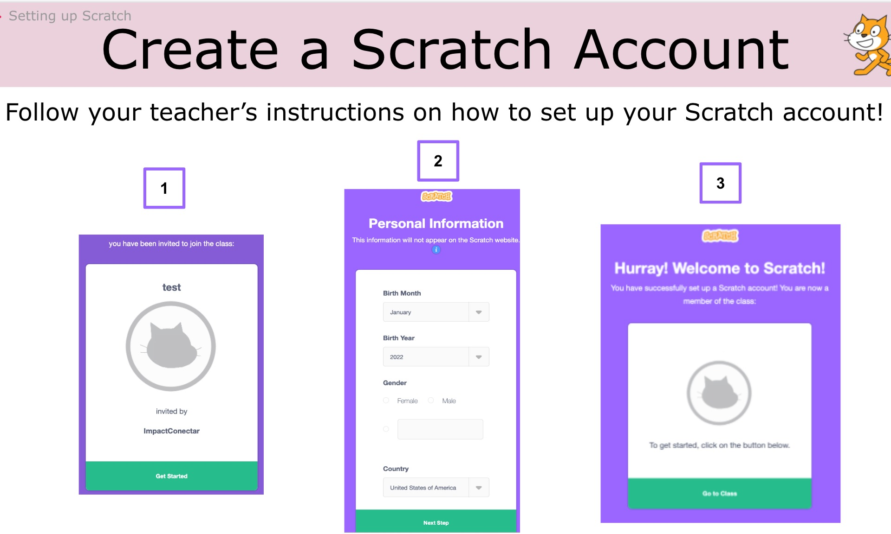
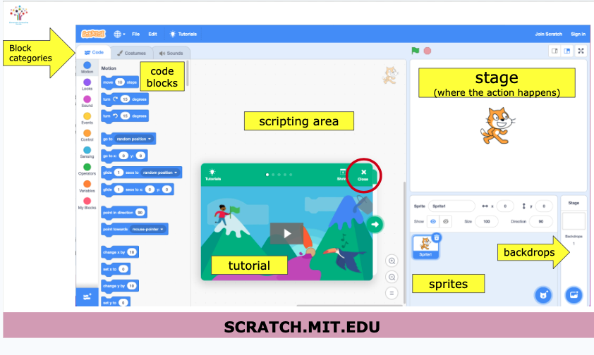
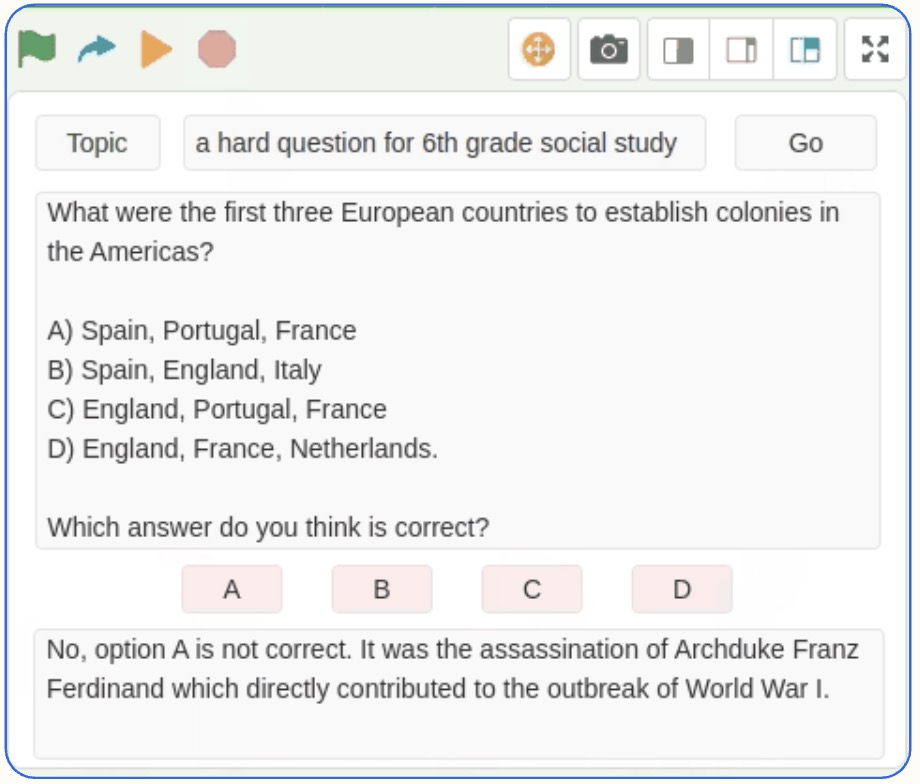

Act 1: Scratch Create
Fourth-grade Scratch lessons that introduce computer science, creativity, and project sharing.
Open Act 1Organized curriculum pathways for Scratch coding, computational thinking, environmental impact projects, and AI literacy.
Created by our curriculum team in affiliation with the Computing & AI for All project.

Choose the pathway that matches your grade band and teaching goals. Current pathways are ready to use; new pathways are being prepared.
Fourth-grade Scratch lessons that introduce computer science, creativity, and project sharing.
Open Act 1
Fifth-grade Scratch lessons focused on animation, loops, games, and computational design.
Open ACT 2
Scratch projects that connect coding with environmental science and community impact.
Open ACT 3
Middle-school AI literacy lessons using CreatiCode, generative tools, and project-based coding.
Open ACT 4
Foundational Scratch projects and lessons for building core programming confidence.
Open Scratch BasicsA new curriculum pathway for science investigation, data-rich inquiry, and classroom-ready exploration.
An upcoming pathway for students to design, guide, and evaluate AI-supported coding workflows.